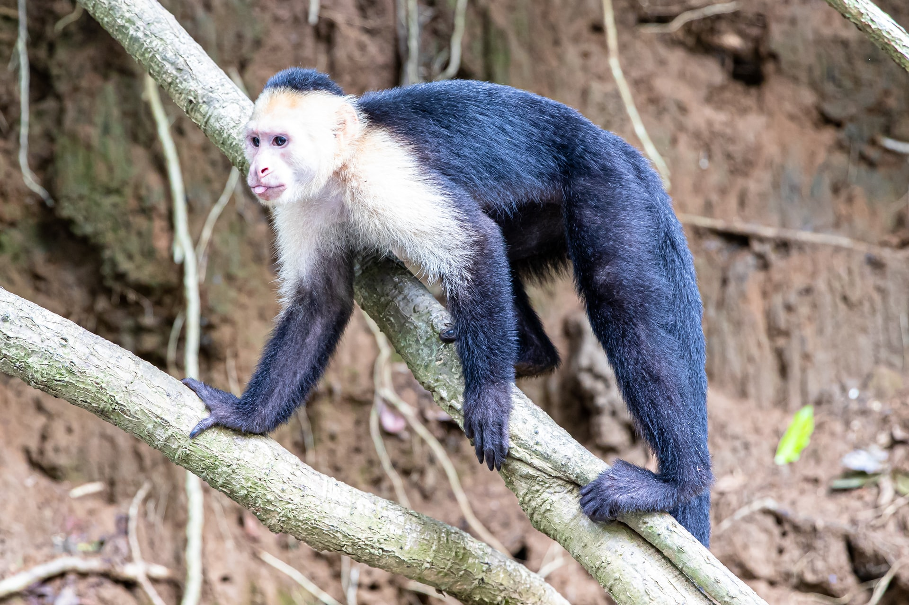

They are quite lazy during the day and you often find them napping around.
They are highly social creatures and you mostly find them in small groups.
They are quite aggressive when it comes to defending they're territory.
They are quite intelligent.
For more interesting and fun facts about capuchin-monkeys, follow this link
Mylo's Profile

Mylo has been in our care for about two and a half years now after being rescued as an infant.
Unfortunately he cannot be released back into the wild as he cannot survive by himself.
However he enjoys life to the fullest just as any mokey in the wild does.
Some of the things he loves doing are:
Playing around with all the toys he has.
jumping around on anything he can climb.
He loves his fruits and will eat just about any fruit he's offered
He is curious about any and everything and you'll most likely find him inspecting anything new in and around his environment.